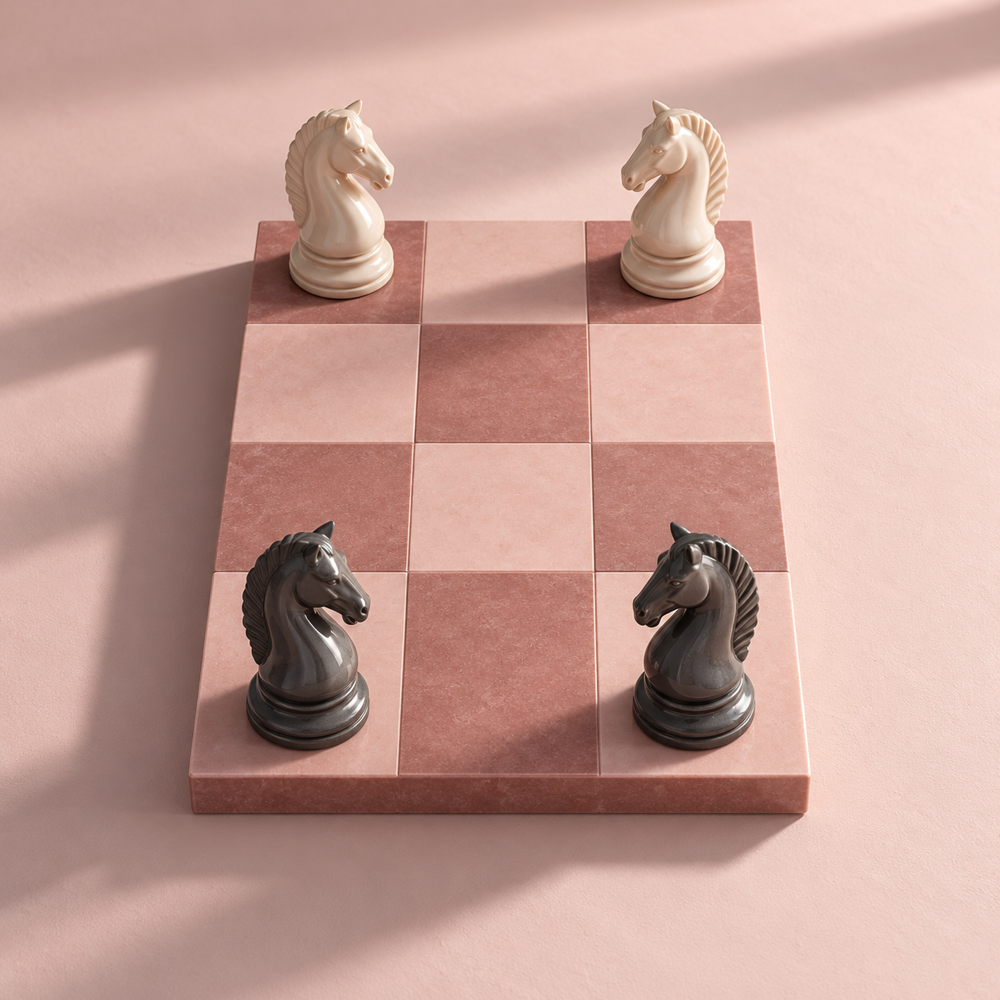

Um laboratório de teoria dos grafos
A matemáticaem movimento.
Dos Problemas de Guarini à Teoria dos Grafos.
Construa, explore
e descubra o caminho.
Cada casa é um vértice. Toque para ver suas conexões.
Da primeira pergunta
à descoberta.
Qual é a sua
próxima pergunta?
Escolha um ponto de partida. O resto é investigação.
Um tabuleiro.
Inúmeras possibilidades.
Crie estruturas regulares ou irregulares e descubra como cada casa transforma as conexões.
Explorar tabuleirosUma troca de posições.
Qual o menor caminho?
Posicione cavalos, investigue os movimentos possíveis e encontre uma solução passo a passo.
Investigar com cavalosExemplos
Um desafio de 1512.
Uma nova forma de ver.

A pesquisa
O que acontece
entre uma casa
e outra?
Math en Jeans
Uma investigação matemática
Um problema de xadrez pode revelar muito mais do que uma sequência de jogadas.
Nossa pesquisa parte dos Problemas de Guarini, propostos em 1512 pelo matemático italiano Paolo Guarini di Forli, envolvendo a troca de posições entre cavalos em um tabuleiro.
Para encontrar o menor número de movimentos, utilizamos a Teoria dos Grafos: cada casa se torna um vértice e cada movimento possível do cavalo, uma aresta.
Conheça a investigação completa
Analisamos os caminhos mínimos, os conflitos entre os movimentos e a paridade do tabuleiro para entender não apenas como encontrar uma solução, mas também como justificar que ela é a melhor possível.
Depois, aplicamos essa abordagem a um tabuleiro irregular, investigando como a mudança na estrutura das casas altera os caminhos e as possibilidades de movimento.
O Graphos nasceu dessa investigação para transformar esses conceitos em uma experiência visual e interativa, facilitando a exploração dos grafos e dos caminhos encontrados durante a pesquisa.